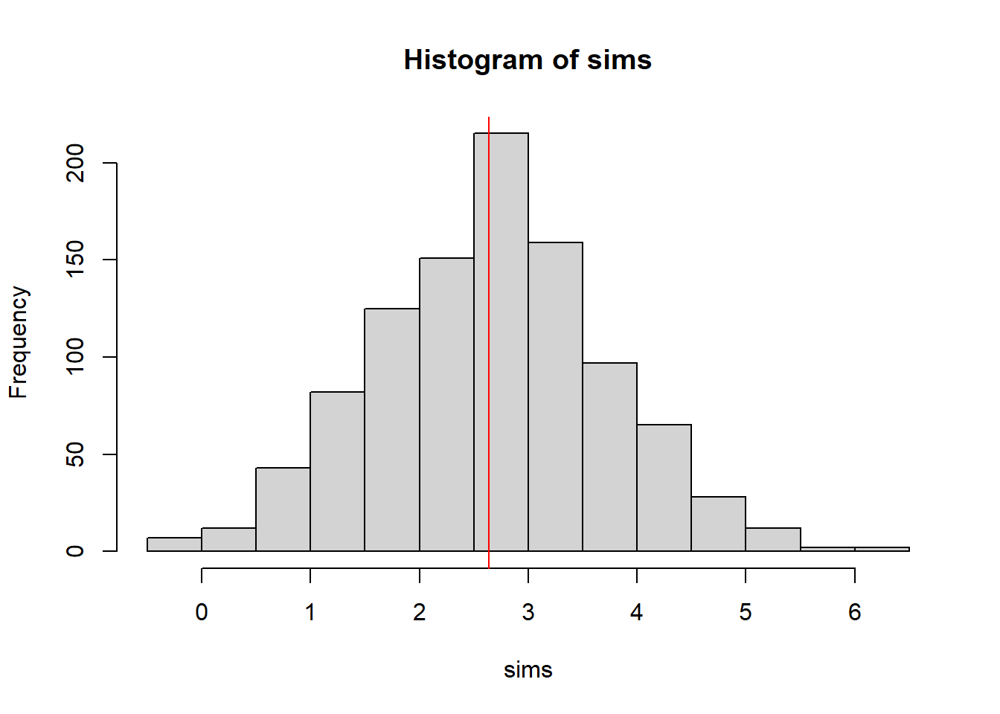
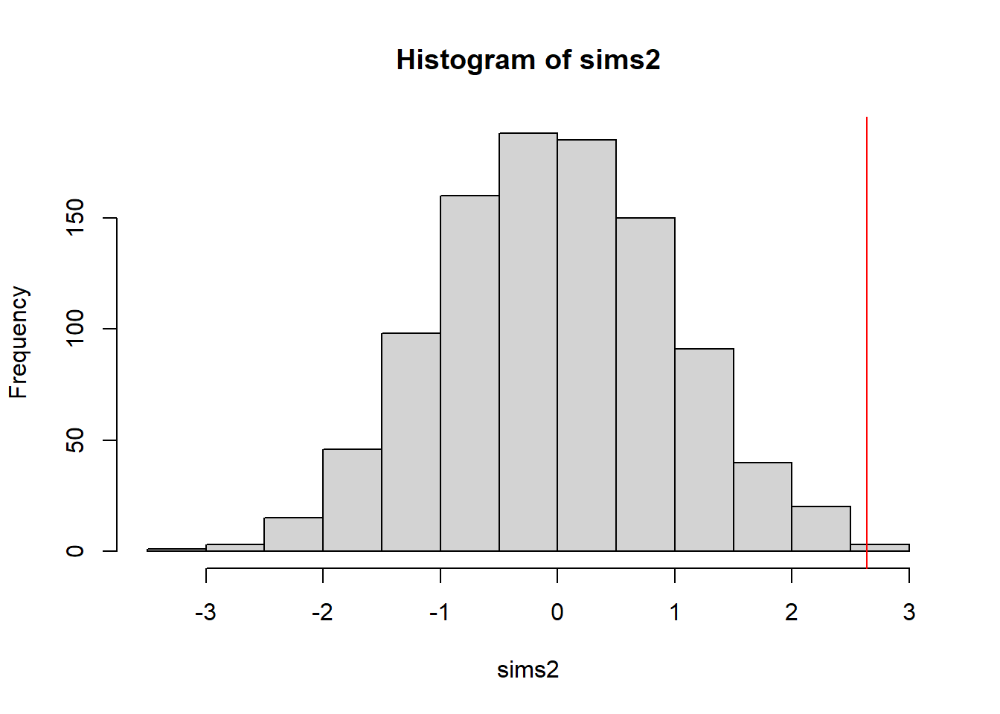

library(glmmTMB)
data(Salamanders)
m <- glm(count ~ spp + mined, family = poisson, data = Salamanders)
check_overdispersion(m)
m <- glmmTMB(
count ~ mined + spp + (1 | site),
family = poisson,
data = Salamanders
)
check_overdispersion(m)Check overdispersion
code
Stats
R
binomial and poisson overdispersion checks
- https://cran.r-project.org/web/packages/aods3/
- https://cran.r-project.org/web/packages/dispmod/dispmod.pdf
- https://cran.r-project.org/web/packages/DHARMa/vignettes/DHARMa.html
- performance::check_overdispersion
- https://stats.stackexchange.com/questions/409490/how-do-i-carry-out-a-significance-test-with-tarones-z-statistic
- https://rpubs.com/cakapourani/beta-binomial
Overdipersion from package performance
library(dispmod)
help(glm.binomial.disp)starting httpd help server ... donedata(orobanche)
mod <- glm(cbind(germinated, seeds-germinated) ~ host*variety, data = orobanche,
family = binomial(logit))
summary(mod)
Call:
glm(formula = cbind(germinated, seeds - germinated) ~ host *
variety, family = binomial(logit), data = orobanche)
Coefficients:
Estimate Std. Error z value Pr(>|z|)
(Intercept) -0.4122 0.1842 -2.238 0.0252 *
hostCuke 0.5401 0.2498 2.162 0.0306 *
varietyO.a75 -0.1459 0.2232 -0.654 0.5132
hostCuke:varietyO.a75 0.7781 0.3064 2.539 0.0111 *
---
Signif. codes: 0 '***' 0.001 '**' 0.01 '*' 0.05 '.' 0.1 ' ' 1
(Dispersion parameter for binomial family taken to be 1)
Null deviance: 98.719 on 20 degrees of freedom
Residual deviance: 33.278 on 17 degrees of freedom
AIC: 117.87
Number of Fisher Scoring iterations: 4mod.disp <- glm.binomial.disp(mod)
Binomial overdispersed logit model fitting...
Iter. 1 phi: 0.02371848
Iter. 2 phi: 0.0248754
Iter. 3 phi: 0.02493477
Iter. 4 phi: 0.02493781
Iter. 5 phi: 0.02493797
Iter. 6 phi: 0.02493797
Converged after 6 iterations.
Estimated dispersion parameter: 0.02493797
Call:
glm(formula = cbind(germinated, seeds - germinated) ~ host *
variety, family = binomial(logit), data = orobanche, weights = disp.weights)
Coefficients:
Estimate Std. Error z value Pr(>|z|)
(Intercept) -0.46533 0.24387 -1.908 0.0564 .
hostCuke 0.51023 0.33472 1.524 0.1274
varietyO.a75 -0.07009 0.31146 -0.225 0.8220
hostCuke:varietyO.a75 0.81956 0.43522 1.883 0.0597 .
---
Signif. codes: 0 '***' 0.001 '**' 0.01 '*' 0.05 '.' 0.1 ' ' 1
(Dispersion parameter for binomial family taken to be 1)
Null deviance: 47.243 on 20 degrees of freedom
Residual deviance: 18.442 on 17 degrees of freedom
AIC: 65.578
Number of Fisher Scoring iterations: 4summary(mod.disp)
Call:
glm(formula = cbind(germinated, seeds - germinated) ~ host *
variety, family = binomial(logit), data = orobanche, weights = disp.weights)
Coefficients:
Estimate Std. Error z value Pr(>|z|)
(Intercept) -0.46533 0.24387 -1.908 0.0564 .
hostCuke 0.51023 0.33472 1.524 0.1274
varietyO.a75 -0.07009 0.31146 -0.225 0.8220
hostCuke:varietyO.a75 0.81956 0.43522 1.883 0.0597 .
---
Signif. codes: 0 '***' 0.001 '**' 0.01 '*' 0.05 '.' 0.1 ' ' 1
(Dispersion parameter for binomial family taken to be 1)
Null deviance: 47.243 on 20 degrees of freedom
Residual deviance: 18.442 on 17 degrees of freedom
AIC: 65.578
Number of Fisher Scoring iterations: 4mod.disp$dispersion[1] 0.02493797library(DHARMa)This is DHARMa 0.4.7. For overview type '?DHARMa'. For recent changes, type news(package = 'DHARMa')citation("DHARMa")To cite package 'DHARMa' in publications use:
Hartig F (2024). _DHARMa: Residual Diagnostics for Hierarchical
(Multi-Level / Mixed) Regression Models_.
doi:10.32614/CRAN.package.DHARMa
<https://doi.org/10.32614/CRAN.package.DHARMa>, R package version
0.4.7, <https://CRAN.R-project.org/package=DHARMa>.
A BibTeX entry for LaTeX users is
@Manual{,
title = {DHARMa: Residual Diagnostics for Hierarchical (Multi-Level / Mixed)
Regression Models},
author = {Florian Hartig},
year = {2024},
note = {R package version 0.4.7},
url = {https://CRAN.R-project.org/package=DHARMa},
doi = {10.32614/CRAN.package.DHARMa},
}Tarone’s test
#' Tarone's Z Test
#'
#' Tests the goodness of fit of the binomial distribution.
#'
#' @param M Counts
#' @param N Trials
#'
#' @return a \code{htest} object
#'
#' @author \href{https://stats.stackexchange.com/users/173082/reinstate-monica}{Ben O'Neill}
#' @references \url{https://stats.stackexchange.com/a/410376/6378} and
#' R. E. TARONE, Testing the goodness of fit of the binomial distribution, Biometrika, Volume 66, Issue 3, December 1979, Pages 585–590, \url{https://doi.org/10.1093/biomet/66.3.585}
#' @importFrom stats pnorm
#' @export
#' @examples
#' #Generate example data
#' N <- c(30, 32, 40, 28, 29, 35, 30, 34, 31, 39)
#' M <- c( 9, 10, 22, 15, 8, 19, 16, 19, 15, 10)
#' Tarone.test(N, M)
Tarone.test <- function(N, M) {
#Check validity of inputs
if(!(all(N == as.integer(N)))) { stop("Error: Number of trials should be integers"); }
if(min(N) < 1) { stop("Error: Number of trials should be positive"); }
if(!(all(M == as.integer(M)))) { stop("Error: Count values should be integers"); }
if(min(M) < 0) { stop("Error: Count values cannot be negative"); }
if(any(M > N)) { stop("Error: Observed count value exceeds number of trials"); }
#Set description of test and data
method <- "Tarone's Z test";
data.name <- paste0(deparse(substitute(M)), " successes from ",
deparse(substitute(N)), " trials");
#Set null and alternative hypotheses
null.value <- 0;
attr(null.value, "names") <- "dispersion parameter";
alternative <- "greater";
#Calculate test statistics
estimate <- sum(M)/sum(N);
attr(estimate, "names") <- "proportion parameter";
S <- ifelse(estimate == 1, sum(N),
sum((M - N*estimate)^2/(estimate*(1 - estimate))));
statistic <- (S - sum(N))/sqrt(2*sum(N*(N-1)));
attr(statistic, "names") <- "z";
#Calculate p-value
p.value <- 2*pnorm(-abs(statistic), 0, 1);
attr(p.value, "names") <- NULL;
#Create htest object
TEST <- list(method = method, data.name = data.name,
null.value = null.value, alternative = alternative,
estimate = estimate, statistic = statistic, p.value = p.value);
class(TEST) <- "htest";
TEST;
}#Generate example data
N <- c(30, 32, 40, 28, 29, 35, 30, 34, 31, 39);
M <- c( 9, 10, 22, 15, 8, 19, 16, 19, 15, 10);
#Apply Tarone's test to the example data
TEST <- Tarone.test(N, M);
TEST;
Tarone's Z test
data: M successes from N trials
z = 2.5988, p-value = 0.009355
alternative hypothesis: true dispersion parameter is greater than 0
sample estimates:
proportion parameter
0.4359756 In this case we have a low p-value, so we find strong evidence to reject the null hypothesis of a binomial distribution in favour of the alternative of over-dispersion. We can fit the data to the beta-binomial model to estimate the dispersion parameter:
#Fit the example data to a beta-binomial distribution
DATA <- data.frame(m=M,n=N)
library(VGAM)Warning: package 'VGAM' was built under R version 4.5.2Loading required package: stats4Loading required package: splinesMODEL <- VGAM::vglm(cbind(DATA$m, DATA$n-DATA$m) ~ 1, betabinomial, trace = FALSE);
Coef(MODEL); mu rho
0.43507150 0.03355549 library(lme4)Loading required package: Matrixset.seed(101)
# "actual" data
intercept <- 0.1; slope <- 0.8
covariate <- runif(1000)
latent_response <- intercept + covariate*slope
observed_response <- rbinom(1000, prob=plogis(latent_response), size=10)
realdat <- data.frame(m = observed_response, n=rep(10,1000), x = covariate, grp = rep(1:100, each = 10))
null <- glmer(cbind(m, n-m) ~ x + (1|grp), data=realdat, family="binomial")
# parametric bootstrap with function from Ben's answer
sims <- replicate(1000,{ fakedat <- simulate(null)[[1]]; Tarone.test(rowSums(fakedat), fakedat[,1])$statistic })
obs <- Tarone.test(realdat$n, realdat$m)$statistic
# approximate one-tailed pval
sum(sims > obs)/length(sims)[1] 0.52hist(sims);abline(v=obs,col="red") #no evidence for overdispersion
# what if covariate was not measured?
null2 <- glmer(cbind(n, n-m) ~ (1|grp), data=realdat, family="binomial")boundary (singular) fit: see help('isSingular')sims2 <- replicate(1000,{ fakedat <- simulate(null2)[[1]]; Tarone.test(rowSums(fakedat), fakedat[,1])$statistic })
sum(sims2 > obs)/length(sims2)[1] 0.002hist(sims2);abline(v=obs,col="red") #now appears to be evidence for overdispersion